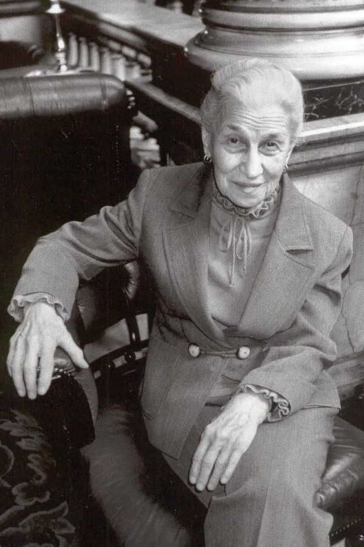

|
伊芙·阿诺德 Eve Arnold
伊芙·阿诺德(Eve Arnold),1913出生于滨州费城的俄国移民家庭。 1946年当她在纽约一家照片冲洗社工作时开始进行摄影工作。1948年在纽约的社会研究新学院师从于颇有影响的阿列竞赛·布罗多维奇学了六周的摄影课。1957年加盟玛格南图片社。伊芙·阿诺德是第一个加盟的女摄影师。1961年, 她移居伦敦, 以摄影记者的身份游历了前苏联, 阿富汗, 埃及和中国。而她在50年代拍摄的女性系列颇有影响, 其中包括了社会各个不同阶层的女性角色, 她试图要呈现出现实主义风格的,“不加润色修饰”的影像。 |
 |